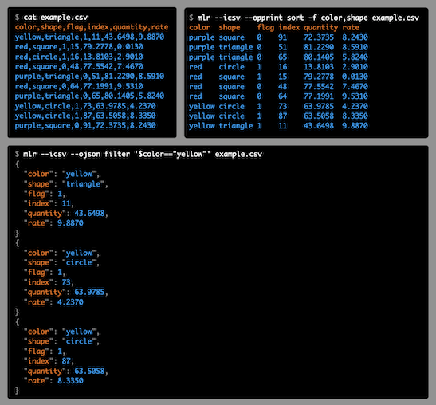

Introduction¶
Miller is a command-line tool for querying, shaping, and reformatting data files in various formats including CSV and JSON.
In several senses, Miller is more than one tool:
Format conversion: You can convert CSV files to JSON, or vice versa, or pretty-print your data horizontally or vertically to make it easier to read.
Data manipulation: With a few keystrokes you can remove columns you don’t care about – or, make new ones using expressions like $rate = $units / $seconds.
Pre-processing/post-processing vs standalone use: You can use Miller to clean data files and put them into standard formats, perhaps in preparation to load them into a database or a hands-off data-processing pipeline. Or you can use it post-process and summary database-query output. As well, you can use Miller to explore and analyze your data interactively.
Compact verbs vs programming language: For low-keystroking you can do things like mlr --csv sort -f name input.csv or mlr --json head -n 1 myfile.json. The sort, head, etc are called verbs. They’re analogs of familiar command-line tools like sort, head, and so on – but they’re aware of name-indexed, multi-line file formats like CSV and JSON. In addition, though, using Miller’s put verb you can use programming-language statements for expressions like $rate = $units / $seconds which allow you to succintly express your own logic.
Multiple domains: People use Miller for data analysis, data science, software engineering, devops/system-administration, journalism, scientific research, and more.
In the following (color added for the illustration) you can see how CSV, tabular, JSON, and other file formats share a common theme which is lists of key-value-pairs. Miller embraces this common theme.
